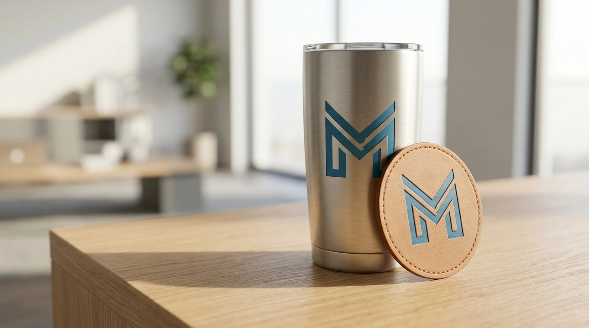

Tumbler dan Botol Minum sebagai Employee Merchandise Utama
Tumbler menjadi kategori employee merchandise yang paling banyak dipilih karena dipakai berulang setiap hari oleh karyawan. Produk ini tersedia dalam material stainless steel dengan pilihan kapasitas standar untuk kebutuhan kerja di kantor maupun perjalanan dinas.

Selain fungsi menyimpan minuman, tumbler custom logo memperkuat identitas visual perusahaan saat digunakan karyawan di lingkungan kerja maupun ruang publik. Pilihan warna korporat dapat disesuaikan dengan brand guideline masing-masing perusahaan.
Varian tumbler yang tersedia sebagai employee merchandise:
- Tumbler double wall dengan fitur anti tumpah untuk mobilitas tinggi
- Tumbler kaca dengan sleeve custom untuk kesan premium
- Set tumbler dan tatakan gelas untuk paket meja kerja
Apparel Kerja sebagai Identitas Tim Perusahaan
Apparel seperti polo shirt dan kaos kerja digunakan untuk memperkuat kekompakan visual tim, terutama pada kegiatan yang melibatkan interaksi dengan klien atau mitra bisnis. Produk ini juga berfungsi sebagai employee merchandise yang menonjolkan citra profesional perusahaan.
Pemilihan bahan apparel memengaruhi kenyamanan pemakaian dalam jangka panjang, terutama untuk tim yang menggunakan seragam sepanjang hari kerja. Teknik bordir umumnya dipilih untuk kesan formal, sementara sablon digital lebih fleksibel untuk desain penuh warna.
Kategori apparel yang tersedia meliputi:
- Polo shirt bordir logo dengan pilihan warna korporat
- Kemeja kerja custom untuk kebutuhan seragam kantor
- Jaket ringan dengan logo bordir untuk kegiatan luar kantor
Alat Tulis dan Perlengkapan Kerja Harian
Alat tulis seperti notebook, pulpen, dan flashdisk custom menjadi employee merchandise dengan biaya per unit yang relatif terjangkau untuk pemesanan skala besar. Produk ini cocok dibagikan pada momen rutin seperti rapat kerja tahunan atau pelatihan internal.
Kombinasi alat tulis dalam satu paket memberikan kesan lebih rapi dibandingkan pembagian produk secara terpisah, terutama untuk acara yang melibatkan banyak peserta dari berbagai divisi.
Produk alat tulis yang sering dipesan sebagai employee merchandise:
- Notebook custom cover dengan logo timbul
- Pulpen metal dengan ukiran nama perusahaan
- Flashdisk custom logo untuk kebutuhan penyimpanan data kerja
Memilih Employee Merchandise Sesuai Anggaran Perusahaan
Penyesuaian anggaran employee merchandise umumnya dilakukan dengan menentukan kategori produk utama terlebih dahulu, kemudian menyesuaikan jumlah unit dan tingkat kustomisasi desain. Produk dengan proses cetak sederhana cenderung memiliki biaya produksi lebih efisien untuk volume besar.
Tim procurement dapat berkonsultasi terkait kombinasi produk yang sesuai dengan alokasi anggaran, baik untuk kebutuhan apresiasi rutin maupun program loyalitas jangka panjang.
"Employee merchandise yang tepat tidak hanya fungsional tetapi juga menjadi simbol kebanggaan seluruh karyawan perusahaan."
— Erlang Sinatrya, Penulis Merchandise Kantor

Pesan Employee Merchandise di Merchandise Kantor
Merchandise Kantor siap membantu tim HR dan procurement perusahaan Anda memilih employee merchandise yang sesuai kebutuhan, mulai dari tumbler, apparel, hingga alat tulis dengan opsi custom logo. Hubungi tim Merchandise Kantor untuk konsultasi produk dan dapatkan penawaran sesuai skala pemesanan perusahaan Anda.